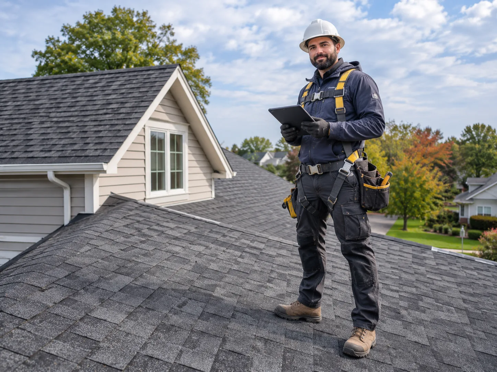
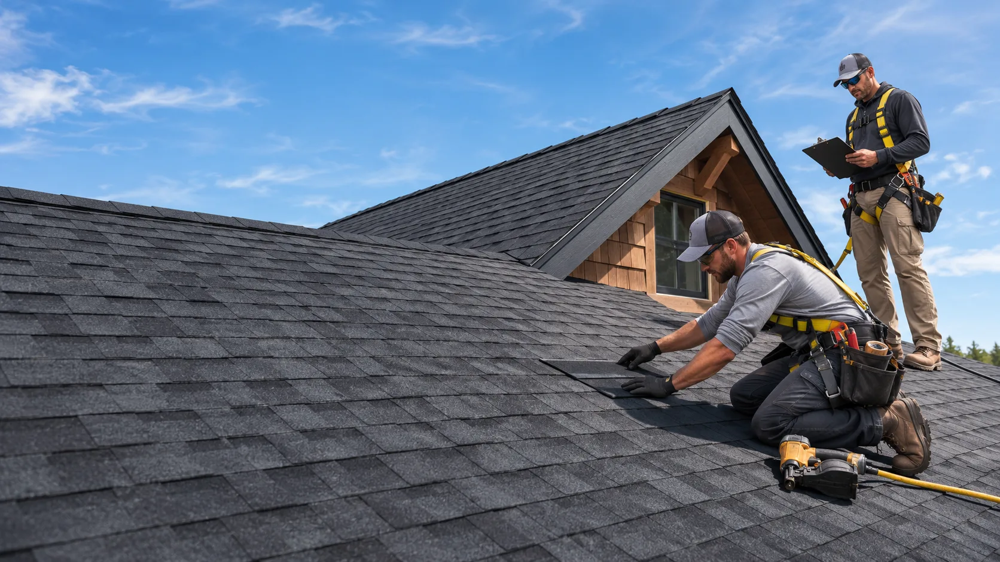
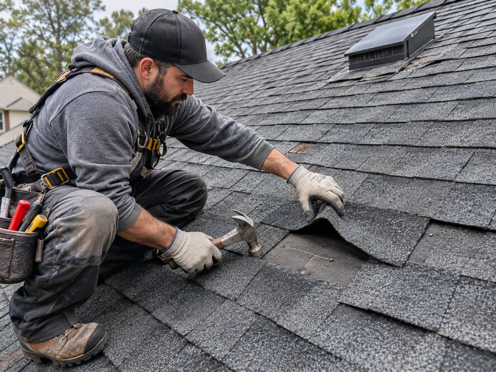
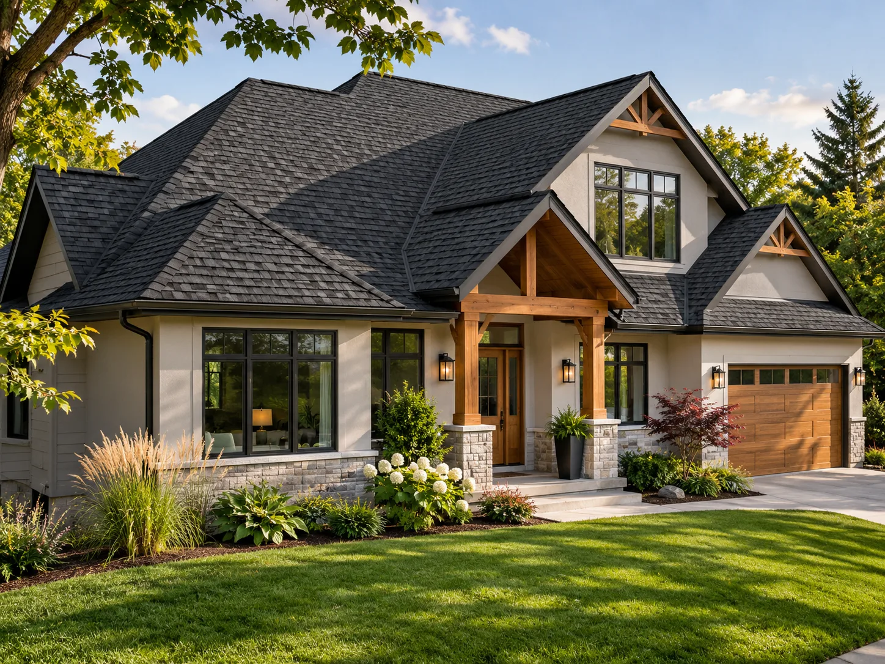
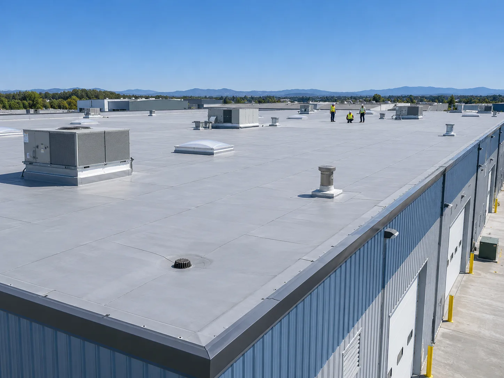
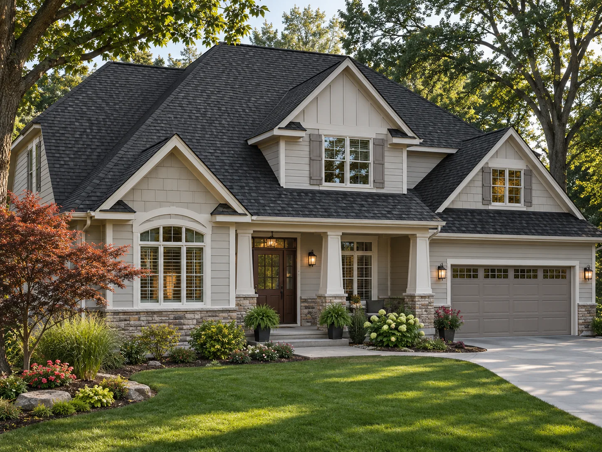
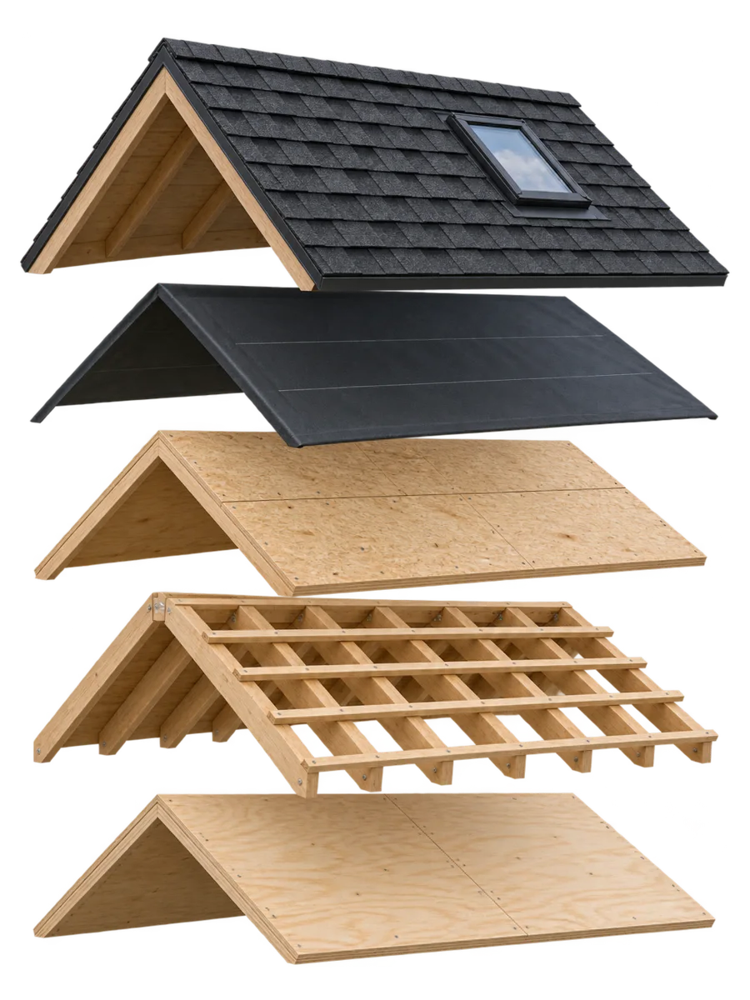
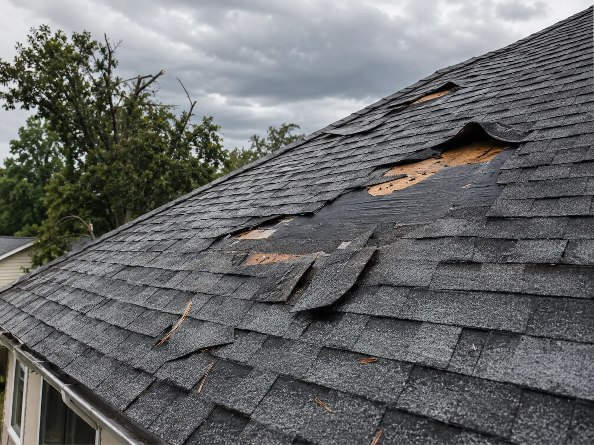
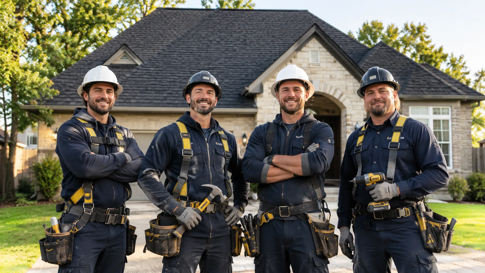

Roof inspections
& leak detection
Understand the condition of your roof and the next steps for visible leaks or damage.

From storm damage repairs to full roof replacements, protect your home or business with careful inspections and quality workmanship.
From roof inspections to shingle replacement, understand what your property needs and plan the work with confidence.
How Does It Work?
Understand the condition of your roof and the next steps for visible leaks or damage.

Address missing shingles, leaks, and damage after severe weather.

Explore materials and plan a replacement that suits your property.

Practical roofing support for commercial buildings and flat-roof properties.

We help homeowners and businesses understand their roof’s condition, review practical options, and plan repairs or replacement.
From shingles and flashing to the structure underneath, every part of a roof has a job to do. Start with a careful inspection and a clear plan for your property.
Request a Roof InspectionRoof ventilation helps manage heat and moisture. Ask how the existing system works with the roofing materials.
The roof deck supports the layers above it. Its condition matters when planning repairs or replacement.

Roof valleys, chimneys, and intersections need careful attention to help direct water away from vulnerable joints.
Gutters, roof edges, and drainage paths work together to carry water away from the building.
Explore examples of damaged and intact roofing. These images show different properties and are not a before-and-after Kairu project.

Damaged roofingIntact roofingDrag to compare, or use the left and right arrow keys.
Know what needs attention and what happens next. The scope, materials, and schedule depend on your roof and the agreed work.
Tell us about the property, visible damage, or leaks you have noticed.
Review the roof’s condition and the areas that may need attention.
Discuss repair or replacement options, materials, scope, and scheduling.
Carry out the agreed work and review the completed scope together.

Roofing is a team effort. Good planning, clear communication, and attention to the details matter throughout the work.
Contact Our TeamRoofing questions
If you have a specific concern, contact Kairu Roofing to discuss the property.
Leaks, missing or lifted shingles, and visible roof damage can be reasons to arrange an inspection. A roofer can assess the roof and explain what they find.
That depends on the roof’s condition and the extent of the damage. An inspection can help identify whether a repair or replacement is appropriate.
Keep away from unsafe areas and arrange a roof inspection. Take photos from a safe location if useful for your records, and contact your insurer about their process.
Timing varies with the roof size, materials, weather, and project scope. Kairu can discuss a schedule after reviewing the property.
Contact Kairu Roofing
Start with a few details about your property and the work you have in mind.
Online enquiries are being set up. You can prepare and save your inspection request below.